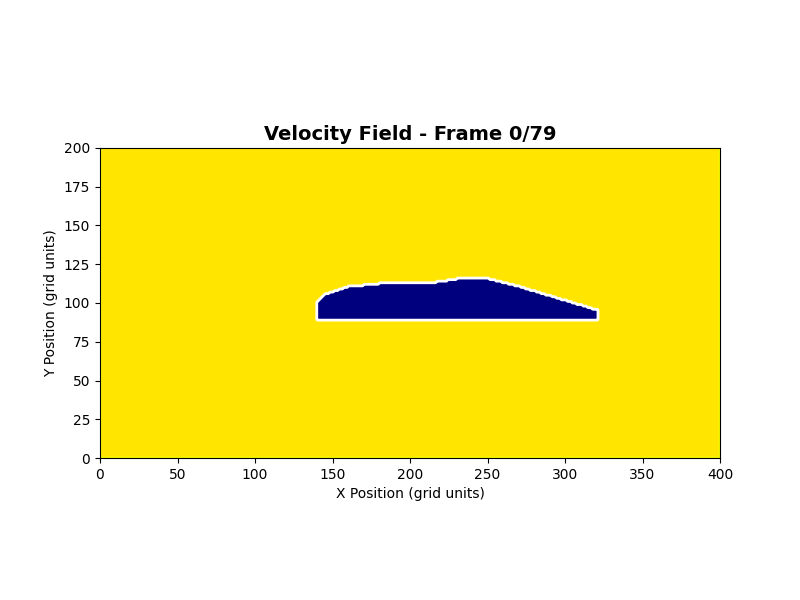
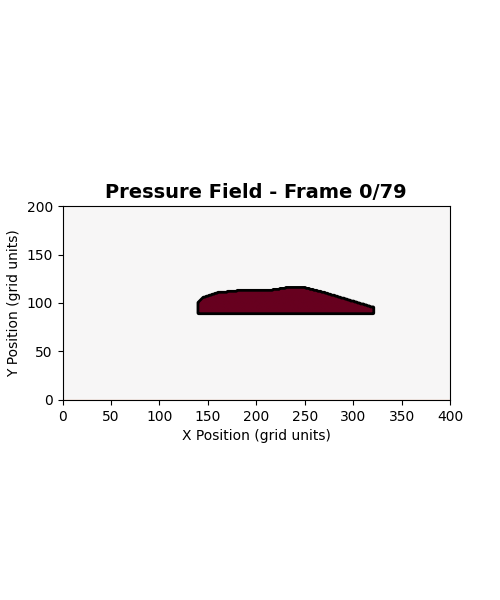
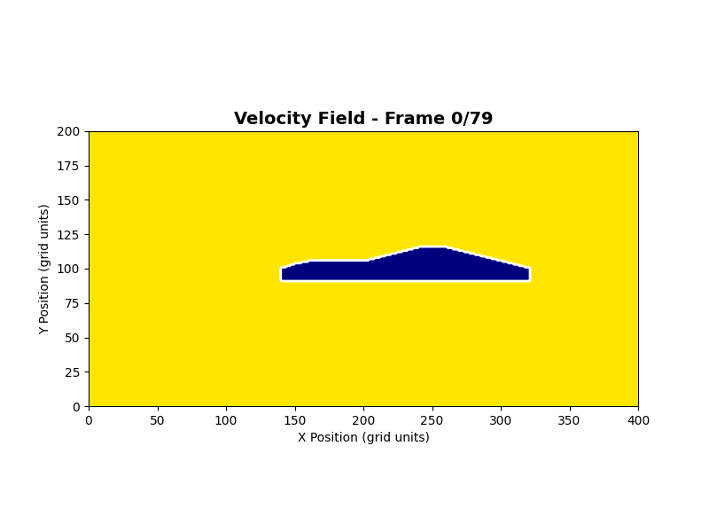
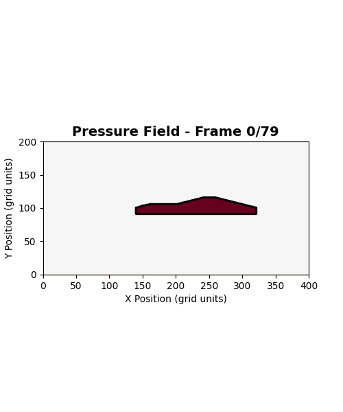
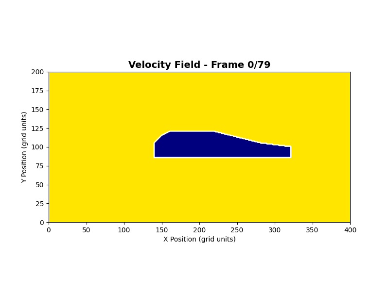
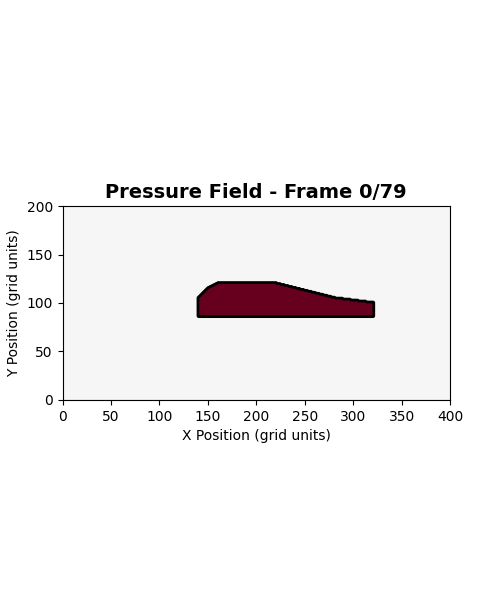
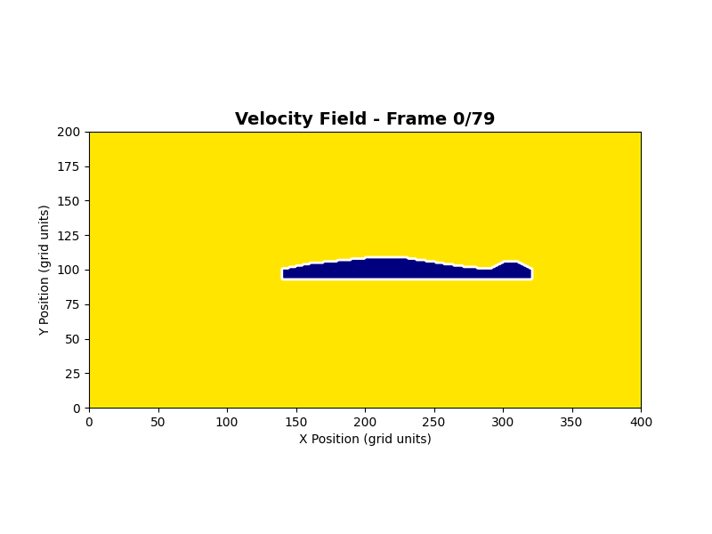
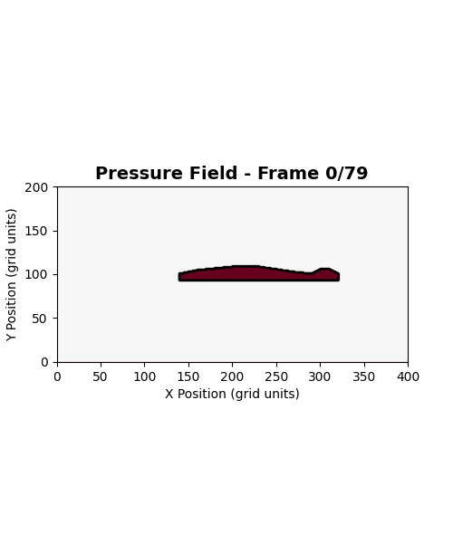

Over the past couple of days, I've been working on a computational fluid dynamics (CFD) simulation to visualize and calculate aerodynamic forces for different vehicle shapes. I will do my best to explain the physics, the math, and see how subtle changes in geometry can create massive differences in performance. I will state that I am in no way an expert in fluid dynamics or aerodynamic design and this is project is purely out of personal curiousity, so if you happen to find anything I can modify or fix, feel free to reach out!
Understanding Drag
Let's start with drag, because I feel like its one of the easier concepts to explain. Drag is the aerodynamic force that resists a vehicle's motion through air. It's why you need to keep pressing the accelerator to maintain high speeds on a highway (or on a track of you're racing). Whenever you drive fast, you're constantly fighting against drag. The faster you go, the more drag you experience, and it grows proportionally to the square of velocity.
The drag force can be calculated using the drag equation:
where:
- $\rho$ is air density
- $v$ is velocity relative to the air
- $C_d$ is the drag coefficient
- $A$ is the total 2D area opposing airflow
The drag coefficient is highly dependent on the shape of the vehicle. A typical sedan has a $C_d$ around 0.30, while a Formula 1 car might have a $C_d$ around 0.70. However, F1 cars generate massive downforce to compensate, allowing for much higher cornering speeds, but we'll get into that in a little bit.
Drag directly affects fuel efficiency and top speed. For instance, a paper conducting research on drag reduction methods states that reducing drag by 15% can improve highway fuel economy by up to 5-7% for most vehicles. For race cars on the other hand, less drag means higher straight-line speeds, which is why teams are so precise and carfeul with bodywork down to the millimeter.
Understanding Downforce
While drag is always present, downforce is something engineers actively design into race cars. Downforce is basically negative lift, the vertical force pushing the car down onto the track. More downforce means better grip, which means faster cornering.
The downforce equation is similar to drag:
where $C_l$ is the lift coefficient, and a negative $C_l$ indicates downforce. Formula 1 cars, for exmaple, can generate 3-4 times their own weight in downforce at high speeds, keeping them attatched to the track at all times (unless there's an inchident).
The Drag-Downforce Tradeoff
You may now be wondering: so wouldn't the best body design just incorporate really low drag with higher downforce?
That's where the issue of optimization arises. Generating downforce almost always increases drag. Wings, diffusers, and other aerodynamic components that create downforce also create increased turbulence and drag. For this reason, race engineers must balance these forces based on the tracks that they race on. This means prioritizing a high-downforce design for tracks with lots of cornering and chicanes, while using low-drag designs on tracks with more straights.
The Math Behind the Simulation
To simulate airflow computationally, I used a simplified version of the Navier-Stokes equations, which govern fluid motion. These equations describe how velocity and pressure fields evolve over time in a fluid.
Navier-Stokes Equations (Simplified 2D)
This may look slightly intimidating, so let's break it down:
- $\frac{\partial {u}}{\partial t}$ - how velocity changes over time
- $u \cdot \nabla {u}$ - advection (horizontal movement of the fluid)
- $-\frac{1}{\rho}\nabla p$ - pressure gradient (high to low pressure)
- $\nu \nabla^2 {u}$ - viscous diffusion (friction between fluid layers)
In my simulation, I discretized these equations on a grid and solved them iteratively. Each grid cell represents a small volume of air, and we calculate how velocity and pressure change in each cell based on its neighbors.
Calculating Forces from Pressure
Once we have the pressure field around the vehicle, we can calculate forces by integrating pressure over the vehicle's surface:
where $\hat{{n}}$ is the surface normal vector and $dS$ is a surface element. In practice, this means summing up pressure forces on each grid cell that touches the vehicle boundary.
Visualizing Different Vehicle Shapes
Using the simulation, I tested several vehicle shapes to see how they affect airflow, pressure fields, and the resulting forces. The velocity field graphs range from blue (low velocity) to yellow (high velocity), exhibiting the wind speeds at all locations around the vehicle. On the pressure field graphs, the darker red represents areas of higher pressure, while the white represents areas of lower pressure. Here's what I was able to visualize:
Sedan
 Typical passenger car shape. Moderate drag, minimal downforce. Air flows relatively smoothly over the rounded front and creates a wake behind the vehicle.
Sports Car
 Lower, more aggressive profile. Reduced frontal area lowers drag. Slight downforce from the sloped rear design directs air upward, pushing the car down.
SUV
 Large frontal area and boxy shape create high drag. Turbulent wake behind the vehicle. No significant downforce due to practicality over aerodynamics.
Formula 1 Car
 Extreme aerodynamic design with front and rear wings. Massive downforce from inverted airfoils and ground effect. Higher drag is acceptable for the grip advantage.
My reasoning behind this simulation was to show that vehicle shape isn't just about aesthetics, but its actually incredibly important for determining how air flows around the vehicle body and what forces emerge. Small changes in component angles, curves, and surfaces can dramatically alter the pressure distribution above and below the car, as well as the resulting forces.
Wrapping Up
Simulating aerodynamics computationally gives us a window into the invisible forces that shape and determine vehicle performance. Although I know that this is a simplified 2D simulation, I feel that it still captures the essential physics concepts around vehicle aerodynamics: drag resists motion, downforce improves grip, and geometry is everything.
Real-world CFD simulations are much more complex (for starters they're 3D). They include turbulence models, and run on supercomputers for days. But at the end of the day, the fundamental principles remain the same: air flows from high to low pressure, creates forces on surfaces, and follows the laws of fluid dynamics.
If you want to explore the code, check out my GitHub. The full simulation includes multiple vehicle shapes, force calculations, and animated visualizations of the evolving flow fields.